class: center, middle # Module 2 Markup and HTML ??? Notes for the _first_ slide! --- # Agenda 1. Markup Languages 2. Text Files 3. HTML Tags, Meaning & Attributes 4. Semantic Markup 5. Distinguishing Tags & Generic Tags 6. Validating HTML 7. The Robustness Principle 8. URLs 9. Character References --- # Markup Languages <p>A <dfn style="color: skyblue">markup language</dfn> is a way to describe a document, using only plain (unformatted) text.</p> <p>Whatever we want to say about the content (what it is, formatting, etc) has to be expressed using plain text.</p> --- # Markup Languages <p>An example markup language: <dfn style="color: skyblue">wikitext</dfn>.</p> <p>Wikitext is simple markup language meant to be fast to learn and produce pages with relatively simple formatting. Wikipedia pages are generated from <a href="https://en.wikipedia.org/wiki/Help:Wikitext">their wikitext</a> dialect.</p> --- # Markup Languages <p>Some example wikitext markup:</p> 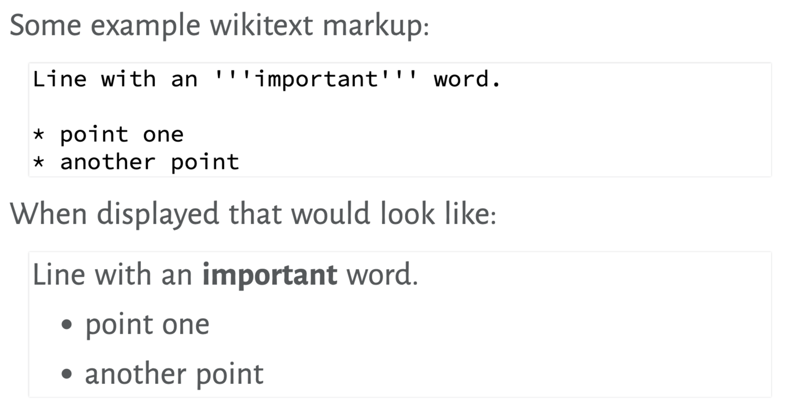 --- # Markup Languages <p>But we aren't really concerned with wikitext: it's just a good first example of markup.</p> <p>The markup language we care about is HTML.</p> --- # Markup Languages <p>To make a markup language work, we need somewhere to write the markup language code, and some way to turn that into our final output.</p> --- # Text Files <p>HTML (and CSS and JS) files contain only characters: no formatting. That is, they are <dfn style="color: skyblue">text files</dfn>.</p> <p>Other things that are text files: CSV, markdown, Java, Python (and every other programming language).</p> --- # Text Files <p>Creating text files is done in a <dfn style="color: skyblue">text editor</dfn>. These are simple tools that let you enter characters, and are designed for working with programming languages and other plain text files.</p> <p>Different text editors will display text with different fonts/colours: those don't matter since those aren't part of the file. All that ends up being saved are the characters you type.</p> --- # Text Files <p>You can find links to download a text editor in <a href="https://www.cs.sfu.ca/CC/165/common/study-guide/">the Study Guide</a>. You'll need one. Word processors are not appropriate.</p> <p>Basically: every text editor does fundamentally the same job. Find one you like.</p> --- # Text Files <p>HTML files are text files, saved with the extension <code class="remark-code">.html</code>.</p> <p>As long as you name the file <code class="remark-code file"><var>something</var>.html</code>, it will be treated as HTML.</p> --- # HTML Tags <p>Here are the basic contents for an HTML file:</p> 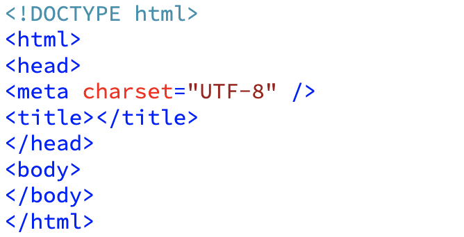 --- # HTML Tags <p>We can type (or copy-and-paste) that into a text editor, save as a <code class="remark-code file">.html</code> file, and open it to see a blank page in the web browser.</p> --- # HTML Tags <p>The code in the <q><span class="hljs-tag"><</span>…></q> are HTML <dfn style="color: skyblue">tags</dfn>.</p> <p>Tags come in opening and closing pairs, like <span class="hljs-tag"><</span>body>… <span class="hljs-tag"><</span>/body> (except for a few we'll talk about later).</p> --- # HTML Tags <p>The stuff between the tag's opening and closing are the <dfn style="color:darkblue">contents</dfn>.</p> <p>The opening tag + contents + closing tag form an <dfn style="color:darkblue">element</dfn>.</p> --- # HTML Tags <p>Demo:</p> <ol> <li>Create an HTML file with the contents above. Open in a browser.</li> <li>Fill in the <span class="hljs-tag"><</span>title>. Reload.</li> <li>In the <span class="hljs-tag"><</span>body>, add a <span class="hljs-tag"><</span>p> element with some text. Reload.</li> </ol> --- # HTML Tags <p>Notice that all tags are <q>nested</q> together so that one is either entirely inside or outside another. They cannot partially overlap.</p> <p>These are one element inside another; one element after another; opening/closing tags incorrectly overlapped.</p> 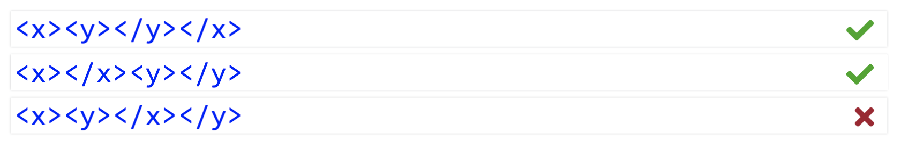 --- # Basic Tags <p>Let's look at the things we saw in that first <code class="remark-code file">.html</code> file…</p> <ul> <li><p><span class="hljs-tag"><</span>!DOCTYPE html>:</p>The document type declaration which indicates that we're using HTML5. Not actually and HTML tag, but some meta-information about the document.</li> <li><p><span class="hljs-tag"><</span>html>…<span class="hljs-tag"><</span>/html>:</p> the document tag that contains the entire HTML page. Starts first and ends last.</li> </ul> --- # Basic Tags <ul> <li><p><span class="hljs-tag"><</span>head>…<span class="hljs-tag"><</span>/head></code>: information about the page.</p> It will only contain the <span class="hljs-tag"><</span>meta> and <span class="hljs-tag"><</span>title> for now.</li> <li><p><span class="hljs-tag"><</span>meta charset="UTF-8" /></code>:</p> the <q>character encoding</q> for the file, which indicates how the text is encoded into bits. For us, this tag will always appear exactly like this.</li> </ul> --- # Basic Tags <ul> <li><p><span class="hljs-tag"><</span>title>… <span class="hljs-tag"><</span>/title>:</p> The main title for the page. Used in the browser window's title bar, for bookmarks, etc.</li> <li><p><span class="hljs-tag"><</span>body>… <span class="hljs-tag"><</span>/body>:</p> The actual content of the page. Displayed in the main part of the browser window.</li> <li><p>And there are many more…</p></li> </ul> --- # More Tags <p>Those tags will be on every page, arranged just like that.</p> <p>But, we'll need some more tags to put actual content on our page…</p> --- # More Tags <ul> <li><p><span class="hljs-tag"><</span>h1>:the main heading on the page.Should probably be exactly one on every page, with the same text as the <span class="hljs-tag"><</span>title>.</p></li> <li><p><span class="hljs-tag"><</span>p>: a paragraph. Should be used to enclose each paragraph on the page.</p></li> </ul> --- # More Tags <ul> <li><p><span class="hljs-tag"><</span>em>: emphasized text. Part of a paragraph (or heading or similar) that you want to give emphasis: important words.</p></li> <li><p><span class="hljs-tag"><</span>ul>: an <em>unordered</em> list. A bulletted list where the order of items isn't important. Can contain only list items.</p></li> <li><p><span class="hljs-tag"><</span>li>: a list item. Must go in a <span class="hljs-tag"><</span>ul> (or other list structure).</p></li> </ul> --- # More Tags <p>Now we have enough to recreate the Markdown example from earlier in HTML:</p> 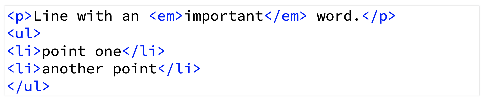 --- # More Tags <p>Notice that all of the formatting must be done with HTML (and later CSS). That is, a line break in the HTML code has no effect on the browser display.</p> --- # Meaning in HTML <p>If you look in <a href="https://developer.mozilla.org/en/docs/Web/Guide/HTML/HTML5/HTML5_element_list">the HTML reference</a> we're using (or any good HTML documentation), you'll see that the HTML tags are defined by <em>their meaning</em> not appearance.</p> <p>e.g. <span class="hljs-tag"><</span>em> is described as like <q>emphasized text</q>, not <q>italics</q>.</p> --- # Meaning in HTML <p>When choosing tags for content, pay attention to <strong>the meaning</strong> of tags, not what they look like. We'll make our content look the way we want later.</p> --- # Attributes <p>The <span class="hljs-tag"><</span>meta> element we used in the first HTML page we had:</p> <pre class="highlight lang-html hljs xml" data-lang=".html"><span class="hljs-tag"><<span class="hljs-name">meta</span> <span class="hljs-attr">charset</span>=<span class="hljs-string">"UTF-8"</span> /></span></pre> <p>What's the <code class="remark-code html">charset="UTF-8"</code> part? None of the other tags had that.</p> --- # Attributes <pre class="highlight lang-html continuation hljs xml" data-lang=".html"><span class="hljs-tag"><<span class="hljs-name">meta</span> <span class="hljs-attr">charset</span>=<span class="hljs-string">"UTF-8"</span> /></span></pre> <p>Here, <code class="remark-code html">charset</code> is an <dfn style="color: blue">attribute</dfn>. Attributes change the behaviour or meaning of an element.</p> <p>Attributes have a <dfn style="color: blue">value</dfn>: <code class="remark-code html">UTF-8</code> in this example.</p> --- # Attributes <p>Another example: there is an <span class="hljs-tag"><</span>abbr> tag to indicate abbreviations.</p> <pre class="highlight lang-html hljs xml" data-lang=".html"><span class="hljs-tag"><</span><span class="hljs-name">abbr</span>>IBM<span class="hljs-tag"><<span class="hljs-name">/abbr</span>></span></pre> <p>… but it's not very interesting to say that this <em>is</em> and abbreviation. We'd also like to specify what it's an abbreviation <em>for</em>.</p> --- # Attributes <p>The <code class="remark-code html">title</code> attribute can be used with <span class="hljs-tag"><</span>abbr> to give the full expansion of the abbreviation:</p> <pre class="highlight lang-html hljs xml" data-lang=".html"><span class="hljs-tag"><<span class="hljs-name">abbr</span> <span class="hljs-attr">title</span>=<span class="hljs-string">"International Business Machines"</span>></span>IBM<span class="hljs-tag"><<span class="hljs-name">/abbr</span>></span></pre> <p>Browsers generally show the title as a tooltip if you mouse-over the text: <abbr title="International Business Machines">IBM</abbr>.</p> <aside class="links"><a href="https://developer.mozilla.org/en-US/docs/Web/HTML/Element/abbr"><span class="hljs-tag"><</span>abbr> tag</a></aside> --- # Attributes <p>Another example: the <code class="remark-code html">lang</code> attribute can be used on any element to specify the natural language of the content.</p> <aside class="links"><a href="https://en.wikipedia.org/wiki/List_of_ISO_639-2_codes">List of ISO 639-2 codes</a></aside> <p>There are language codes for (every?) language that you're likely to need.</p> --- # Attributes <p>For example, we probably should start every page with this document tag, because we're writing English:</p> <pre class="highlight lang-html hljs xml" data-lang=".html"><span class="hljs-tag"><<span class="hljs-name">html</span> <span class="hljs-attr">lang</span>=<span class="hljs-string">"en"</span>></span></pre> <p>This will let search engines correctly categorize the page, let the browser offer appropriate automatic translations, etc.</p> --- # Attributes <p>If we switch languages somewhere, we can specify that as well.</p> <pre class="highlight lang-html hljs xml" data-lang=".html"><span class="hljs-tag"><<span class="hljs-name">p</span>></span>He demanded <span class="hljs-tag"><<span class="hljs-name">q</span> <span class="hljs-attr">lang</span>=<span class="hljs-string">"fr"</span>></span>Quoi?<span class="hljs-tag"></<span class="hljs-name">q</span>></span> and I was shocked.<span class="hljs-tag"></<span class="hljs-name">p</span>></span></pre> <aside class="links"><a href="https://developer.mozilla.org/en-US/docs/Web/HTML/Element/q"><span class="hljs-tag"><</span>q> tag</a></aside> --- # Links <p>The <span class="hljs-tag"><</span>a> tag is used to create a link, and the <code class="remark-code html">href</code> attribute gives the destination.</p> <pre class="highlight lang-html hljs xml" data-lang=".html"><span class="hljs-tag"><<span class="hljs-name">a</span> <span class="hljs-attr">href</span>=<span class="hljs-string">"http://www.ibm.ca/"</span>> IBM<span class="hljs-tag"> <</span>/a></pre> <aside class="links"><a href="https://developer.mozilla.org/en-US/docs/Web/HTML/Element/a"><span class="hljs-tag"><</span>a> tag</a></aside> <p>The value for <code class="remark-code html">href</code> is a URL. More later about what values can go there (besides complete absolute URLs).</p> --- # Empty Tags <p>There was one other weird thing about our meta tag: it didn't seem to be closed:</p> <pre class="highlight lang-html hljs xml" data-lang=".html"><span class="hljs-tag"><<span class="hljs-name">meta</span> <span class="hljs-attr">charset</span>=<span class="hljs-string">"UTF-8"</span> /></span></pre> <p>i.e. there was no <span class="hljs-tag"><</span>/meta> anywhere.</p> --- # Empty Tags <pre class="highlight lang-html continuation hljs xml" data-lang=".html"><span class="hljs-tag"><<span class="hljs-name">meta</span> <span class="hljs-attr">charset</span>=<span class="hljs-string">"UTF-8"</span> /></span></pre> <p>The <span class="hljs-tag"><</span>meta> tag is an <dfn style="color: skyblue">empty tag</dfn>: one that has no contents.</p> <p>Since it's empty, it must be closed right away. The <q><code class="remark-code html">/></code></q> is how we will specify that. It's a signal that the tag is closing <em>now</em> and there are no contents</p> --- # Empty Tags <p>Older versions of HTML allowed you to explicitly close it right away, but this is not allowed in HTML5:</p> 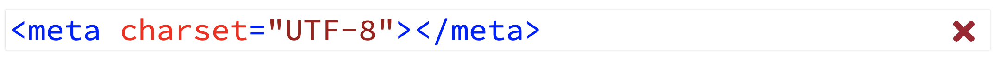 <p>… but this is probably the right way to think about it: a tag that closes as soon as it opens.</p> --- # Empty Tags <p>Another empty tag: <span class="hljs-tag"><</span>img /> which is used to insert an image onto a page.</p> <pre class="highlight lang-html hljs xml" data-lang=".html"><span class="hljs-tag"><<span class="hljs-name">img</span> <span class="hljs-attr">src</span>=<span class="hljs-string">"group.jpg"</span> <span class="hljs-attr">alt</span>=<span class="hljs-string">"a group of people"</span> /></span></pre> <p>The <code class="remark-code html">src</code> attribute is used to give the location where the image can be found. In this case, a file in the same directory as the <code class="remark-code html">.html</code>. (Also a URL: again, more later.)</p> --- # Semantic Markup <p>As we said: HTML tags focus on the <em>meaning</em> or <em>purpose</em> or type of content they hold.</p> <aside class="links"><a href="https://developer.mozilla.org/en/docs/Web/Guide/HTML/HTML5/HTML5_element_list">HTML Reference</a></aside> <p>HTML is a <dfn style="color: blue">semantic markup language</dfn>. Semantic: to do with meaning.</p> --- # Semantic Markup <p>Everything we have expressed in HTML has been semantic: <span class="hljs-tag"><</span>p> = paragraph, <span class="hljs-tag"><</span>h1> = level-1 heading, <span class="hljs-tag"><</span>em> = text that's emphasized, etc.</p> --- # Semantic Markup <p>The opposite: <dfn style="color: blue">visual</dfn> or <dfn style="color: blue">presentational</dfn> markup, as you would often use in MS Word or similar, where you specify <q>bold</q> or <q>16 pt font</q>. Word's <q>styles</q> are generally semantic.</p> <figure>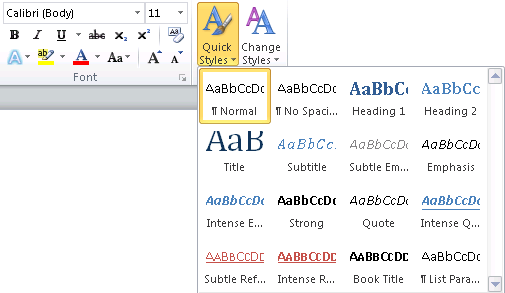</figure> --- # Semantic Markup <p>When writing HTML, your job is to worry about the meaning, not the appearance, of the content.</p> <p>Describe the meaning of the content you have as best possible with the tags available. Pay attention to the meanings given in the reference.</p> --- # Semantic Markup <p>We will worry about appearance later with CSS.</p> <p>CSS is where you can express things like <q>all <span class="hljs-tag"><</span>p> elements should appear with font <var>X</var>, left-justified, red</q>.</p> --- # Semantic Markup: Why? <p>Why bother with a semantic markup language and another layer for presentation?</p> <p>This should make it easier to maintain and update the site: if we want every <span class="hljs-tag"><</span>p> to look different, just update one thing the CSS.</p> --- # Semantic Markup: Why? <aside class="links"><a href="https://www.inboundnow.com/html5-semantic-elements-mean-seo/">The HTML5 Semantic Elements and What They Mean For SEO</a></aside> <p>Semantic markup should help search engines: they can extract a lot of meaning from just the markup and better categorize your pages.</p> --- # Semantic Markup: Why? <p>It will make it easier to adapt pages to different situations.</p> <p>For example, on a mobile browser, you might want a different font size, or arrangement of the content. We can express this in CSS, but the semantic content doesn't change: a heading is still a heading.</p> --- # Example Page <p>Let's put together a more realistic example: we will use HTML to mark up a recipe.</p> <aside class="links"><a href="https://jamesoff.net/fun/random-recipe-generator/">Random Recipe Generator</a></aside> <p>Parts of the page we need to decide on markup for: serving size (<q>serves 4</q>), introduction (<q>This is a recipe adapted from my seriouseats.com…</q>, etc), ingredients, steps.</p> --- # Example Page <p>Things I expect to do in the demo:</p> <aside class="links"><a href="https://developer.mozilla.org/en-US/docs/Web/HTML/Element/h2"><span class="hljs-tag"><</span>h2> tag</a></aside> <aside class="links"><a href="https://developer.mozilla.org/en-US/docs/Web/HTML/Element/cite"><span class="hljs-tag"><</span>cite> tag</a></aside> <aside class="links"><a href="https://developer.mozilla.org/en-US/docs/Web/HTML/Element/section"><span class="hljs-tag"><</span>section> tag</a></aside> <ul> <li>Section headings as <span class="hljs-tag"><</span>h2>s.</li> <li>Cite the recipe source with <span class="hljs-tag"><</span>cite>s.</li> <li>Add <span class="hljs-tag"><</span>section>s to identify parts of the page.</li> </ul> --- # Distinguishing Tags <p>Two problems are going to start happening as we start making real pages and trying to match meaning to markup.</p> <ol> <li>different <em>kinds</em> of paragraphs, sections, etc;</li> <li>content that doesn't match the meaning of tags in HTML.</li> </ol> --- # Distinguishing Tags <p>For (1), we will want to make them look different later with stylesheets.</p> <p>e.g. a list that is the table of contents, vs the recipe steps. Both are (ordered) lists, but we might want to style the intro and servings differently.</p> --- # Distinguishing Tags <p>We can distinguish instances of the same tag with <code class="remark-code html">class</code> or <code class="remark-code html">id</code> attributes. Both attributes let you refine the meaning of tags.</p> <pre class="highlight lang-html hljs xml" data-lang=".html"><span class="hljs-tag"><<span class="hljs-name">p</span> <span class="hljs-attr">id</span>=<span class="hljs-string">"serving"</span>>Serves four. <span class="hljs-tag"><</span>/<span class="hljs-name">p</span>></pre> <p>The value for <code class="remark-code html">class</code> and <code class="remark-code html">id</code> can be any word we want: here, we're suggesting that this paragraph contains something about <q>servings</q>.</p> --- # Distinguishing Tags <p>In this example, we are indicating that there is something different about the last list item:</p> <pre class="highlight lang-html hljs xml" data-lang=".html"><span class="hljs-tag"><<span class="hljs-name">ol</span>></span> <span class="hljs-tag"><<span class="hljs-name">li</span>></span>Combine ingredients<span class="hljs-tag"><<span class="hljs-name">/li</span>></span> <span class="hljs-tag"><<span class="hljs-name">li</span>></span>Bake until done.<span class="hljs-tag"><<span class="hljs-name">/li</span>></span> <span class="hljs-tag"><<span class="hljs-name">li</span> <span class="hljs-attr">class</span>=<span class="hljs-string">"optional"</span>></span>Garnish.<span class="hljs-tag"><<span class="hljs-name">/li</span>></span> <span class="hljs-tag"><<span class="hljs-name">/ol</span>></pre> --- # Distinguishing Tags <p>The word <q>optional</q> suggests (to people, not the browser) how it's different.</p> <p>In any case, the value for <code class="remark-code html">class</code> and <code class="remark-code html">id</code> should be a meaningful word.</p> --- # Distinguishing Tags <p>The difference: an <code class="remark-code html">id</code> value must be unique on a page.</p> <p>We can have multiple things with <code class="remark-code html">class="optional"</code> on a page, but never more than one <code class="remark-code html">id="serving"</code> per page.</p> --- # Distinguishing Tags <p>You should choose appropriately: if it's a piece of content that will only occur once, use <code class="remark-code html">id</code>. Otherwise, <code class="remark-code html">class</code>.</p> <p>We will (soon) be able to use <code class="remark-code html">class</code> and <code class="remark-code html">id</code> to select certain tags for appearance changes in CSS.</p> --- # Generic Tags <p>We solved one of the problems we were having above (tags not specific enough), but not <q>content that doesn't match the meaning of tags in HTML</q>.</p> <p>How do we handle content that doesn't match <em>any</em> of the tags in HTML?</p> --- # Generic Tags <p>First step: have a good look in <a href="https://developer.mozilla.org/en/docs/Web/Guide/HTML/HTML5/HTML5_element_list">the HTML Reference</a>: there might be a tag you didn't know about and will work.</p> <p>e.g. maybe we want to highlight the quantities of ingredients (<q>2 cups</q>) from the item (<q>flour</q>). I can't find any tag I think is relevant.</p> --- # Generic Tags <p>But if still nothing fits, there are two <dfn style="color: blue">generic tags</dfn> that can be used: <span class="hljs-tag"><</span>div> and <span class="hljs-tag"><</span>span>.</p> <p>These have no meaning on their own and should be given one by a meaningful <code class="remark-code html">class</code> or <code class="remark-code html">id</code>.</p> --- # Generic Tags <p>So our example might get markup like:</p> <pre class="highlight lang-html hljs xml" data-lang=".html"><span class="hljs-tag"><<span class="hljs-name">li</span>></span><span class="hljs-tag"><<span class="hljs-name">span</span> <span class="hljs-attr">class</span>=<span class="hljs-string">"quantity"</span>></span>2 cups<span class="hljs-tag"><<span class="hljs-name">/span</span>></span> flour<span class="hljs-tag"><<span class="hljs-name">/li</span>></span></pre> --- # Generic Tags <p>The difference: <span class="hljs-tag"><</span>div> is <dfn style="color: blue">block-level</dfn> content (or <dfn style="color: blue">flow content</dfn>).</p> <p>That is, it can go inside the <span class="hljs-tag"><</span>body> directly, and is generally presented below any previous content. Other block-level tags we have seen: <span class="hljs-tag"><</span>h1>, <span class="hljs-tag"><</span>p>, <span class="hljs-tag"><</span>ul>.</p> --- # Generic Tags <p>The <span class="hljs-tag"><</span>span> is <dfn style="color: blue">inline</dfn> (or <dfn style="color: blue">phrasing</dfn>) content: it goes inside a block-level tag and is generally beside the next/previous content.</p> <p>Other inline tags we have seen: <span class="hljs-tag"><</span>em>, <span class="hljs-tag"><</span>abbr>, <span class="hljs-tag"><</span>a>, <span class="hljs-tag"><</span>q>, <span class="hljs-tag"><</span>img>.</p> --- # Generic Tags <p>General rules for HTML:</p> <ul> <li>Block-level content goes inside the <span class="hljs-tag"><</span>body> and (sometimes) other blocks.</li> <li>Text and inline content goes inside blocks.</li> </ul> --- # Generic Tags <p>Another example: suppose we want a collection of social media links like this:</p> <p>First, consider existing tags for the job: maybe <span class="hljs-tag"><</span>p> or <span class="hljs-tag"><</span>section> or <span class="hljs-tag"><</span>footer>? No, not really.</p> <aside class="links"><a href="https://developer.mozilla.org/en-US/docs/Web/HTML/Element/section"><span class="hljs-tag"><</span>section> tag</a></aside> <aside class="links"><a href="https://developer.mozilla.org/en-US/docs/Web/HTML/Element/footer"><span class="hljs-tag"><</span>footer> tag</a></aside> --- # Generic Tags <p>So, we reach for a generic tag: this is probably block-level content, so <span class="hljs-tag"><</span>div>, with an appropriate <code class="remark-code html">class</code>.</p> <pre class="highlight lang-html hljs xml" data-lang=".html"><span class="hljs-tag"><<span class="hljs-name">div</span> <span class="hljs-attr">class</span>=<span class="hljs-string">"social"</span>></span>Follow us: <span class="hljs-tag"><<span class="hljs-name">a</span> <span class="hljs-attr">href</span>=<span class="hljs-string">"http://twitter.com"</span>></span><span class="hljs-tag"><<span class="hljs-name">img</span> <span class="hljs-attr">src</span>=<span class="hljs-string">"twitter.svg"</span> <span class="hljs-attr">alt</span>=<span class="hljs-string">"Twitter"</span>></span><span class="hljs-tag"><<span class="hljs-name">/a</span>></span> ⋮ <span class="hljs-tag"><</span><span class="hljs-name">/div</span>></pre> --- # Generic Tags <p>Summary:</p> <ol> <li>Start by looking for an existing tag that has a matching meaning.</li> <li>If there isn't one, a generic tag.</li> <li>Give a <code class="remark-code html">class</code> or <code class="remark-code html">id</code> value that suggests some meaning (maybe for any tag, but definitely for a generic tag).</li> </ol> --- # Validating HTML <p>We have heard many rules about HTML. e.g.</p> <ul> <li>Tags must be closed.</li> <li><span class="hljs-tag"><</span>ul> must contain only <span class="hljs-tag"><</span>li>s.</li> <li>Inline content inside block-level.</li> </ul> <p>But what if we get something wrong?</p> --- # Validating HTML <p>The web browser will <strong>not</strong> tell us: it will do its best to display broken HTML, so it <q>works</q> on as many pages as possible.</p> <p>But don't really know if the next browser will “correct” our mistakes the same way. Will our site be horribly broken in another browser? What about when Google tries to index it?</p> --- # Validating HTML <p>Solution: actually write correct HTML. If the browser isn't going to give us feedback when we make a mistake, we need something else for that.</p> <p>An <dfn style="color: blue">HTML validator</dfn> will take our HTML and check against the rules of HTML.</p> --- # Validating HTML <p>We can use the HTML validator online by going to <a href="https://validator.w3.org/"><code class="remark-code url">https://validator.w3.org/</code></a>.</p> <p>If our file has been uploaded, we can give its URL. If not, we can upload the file from our computer or copy-and-paste the code from the text editor.</p> --- # Validating HTML <p>Expectation from now on: any HTML you produce for the course should pass the validator without errors.</p> <p>(Warnings are okay, but it's probably not a bad idea to fix them.)</p> --- # The Robustness Principle <p>An overall principle for any computer system where two things have to communicate: <dfn>the robustness principle</dfn>:</p> <blockquote>Be conservative in what you do, be liberal in what you accept from others.</blockquote> <aside class="links"><a href="https://en.wikipedia.org/wiki/Robustness_principle">Robustness principle</a></aside> --- # The Robustness Principle <p>Web browsers are holding up their end of the robustness principle by doing their best with not-quite-right HTML: <q>be liberal in what you accept</q>.</p> <p>But if we (as HTML authors) rely on that behaviour, we're taking a risk that the next tool won't handle our mistakes the same way.</p> --- # The Robustness Principle <p>We need to follow our end of the deal: <q>be conservative in what you [send]</q>. If we do, we maximize the chances that everything works together.</p> <p>Validating our HTML is part of that. Producing semantically-meaningful markup is another.</p> --- # URLs: Links and Images <p>We have seen two contexts where we can give a URL in HTML:</p> <pre class="highlight lang-html hljs xml" data-lang=".html"><span class="hljs-tag"><<span class="hljs-name">a</span> <span class="hljs-attr">href</span>=<span class="hljs-string">"</span></span><mark><span class="hljs-tag"><span class="hljs-string">http://www.ibm.ca/</span></span></mark><span class="hljs-tag"><span class="hljs-string">"</span>></span>IBM<span class="hljs-tag"><<span class="hljs-name">/a</span>></span> <span class="hljs-tag"><<span class="hljs-name">img</span> <span class="hljs-attr">src</span>=<span class="hljs-string">"</span></span><mark><span class="hljs-tag"><span class="hljs-string">http://example.com/img.jpg</span></span></mark><span class="hljs-tag"><span class="hljs-string">"</span> <span class="hljs-attr">alt</span>=<span class="hljs-string">"a group"</span> /></span></pre> <p>… and there are a few more that we'll see later.</p> --- # URLs: Links and Images <p>The URLs that start with a scheme/protocol (like <code class="remark-code url">http://</code>) are <dfn style="color: blue">absolute URLs</dfn>.</p> <p>These indicate where the content is on the web (or elsewhere with another protocol), and take you to the same place no matter where you start on the web.</p> --- # URLs: Links and Images <p>The other option is <dfn style="color: blue">relative URLs</dfn> which indicate a location relative to the URL of the current page.</p> <p>We have actually seen one of these:</p> <pre class="highlight lang-html hljs xml" data-lang=".html"><span class="hljs-tag"><<span class="hljs-name">img</span> <span class="hljs-attr">src</span>=<span class="hljs-string">"</span></span><mark><span class="hljs-tag"><span class="hljs-string">group.jpg</span></span></mark><span class="hljs-tag"><span class="hljs-string">"</span> <span class="hljs-attr">alt</span>=<span class="hljs-string">"a group of people"</span> /></span></pre> --- # URLs: Links and Images <p>There are a few things you can do with relative URLs</p> <p>Resources in the same folder/directory as the <code class="remark-code file">.html</code> file: just give the file name.</p> <pre class="highlight lang-html hljs xml" data-lang=".html"><span class="hljs-tag"><<span class="hljs-name">img</span> <span class="hljs-attr">src</span>=<span class="hljs-string">"</span></span><mark><span class="hljs-tag"><span class="hljs-string">group.jpg</span></span></mark><span class="hljs-tag"><span class="hljs-string">"</span> <span class="hljs-attr">alt</span>=<span class="hljs-string">"a group of people"</span> /></span></pre> <p>That refers to the image <code class="remark-code file">group.jpg</code> in the same folder as the HTML file.</p> --- # URLs: Links and Images <p>A relative URL can move into a folder: suppose we have an <code class="remark-code file">.html</code> file beside a directory <code class="remark-code file">images</code> and want to refer to an image file in there.</p> <p>Give the name of the directory, slash, and the name of the file:</p> <pre class="highlight lang-html hljs xml" data-lang=".html"><span class="hljs-tag"><<span class="hljs-name">img</span> <span class="hljs-attr">src</span>=<span class="hljs-string">"</span></span><mark><span class="hljs-tag"><span class="hljs-string">images/</span></span></mark><span class="hljs-tag"><span class="hljs-string">vacation.jpg"</span> <span class="hljs-attr">alt</span>=<span class="hljs-string">"our trip"</span> /></span></pre> --- # URLs: Links and Images <p>Or, if we create a directory named <code class="remark-code file">courses</code> for some of our HTML and put a file <code class="remark-code file">english.html</code> in there, we can get to it with:</p> <pre class="highlight lang-html hljs xml" data-lang=".html"><span class="hljs-tag"><<span class="hljs-name">a</span> <span class="hljs-attr">href</span>=<span class="hljs-string">"courses/english.html"</span>></span>English<span class="hljs-tag"><<span class="hljs-name">/a</span>></span></pre> --- # URLs: Links and Images <p>We can also move up a level and out of a directory. The special directory name <q><code class="remark-code url">..</code></q> means <q>go up a level</q>.</p> <p>e.g. to go from the <code class="remark-code file">english.html</code> page back up to the menu, one level up in the directory hierarchy:</p> <pre class="highlight lang-html hljs xml" data-lang=".html"><span class="hljs-tag"><<span class="hljs-name">a</span> <span class="hljs-attr">href</span>=<span class="hljs-string">"../menu.html"</span>></span>The Menu<span class="hljs-tag"><<span class="hljs-name">/a</span>></span></pre> --- # URLs: Links and Images <p>Suppose we have files organized like this:</p> <figure>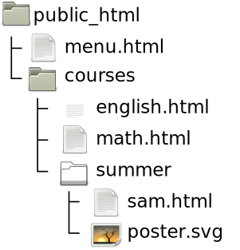</figure> --- # URLs: Links and Images <p>On <code class="remark-code html">english.html</code>, these make sense:</p> <pre class="highlight lang-html hljs xml" data-lang=".html"><span class="hljs-tag"><<span class="hljs-name">a</span> <span class="hljs-attr">href</span>=<span class="hljs-string">"math.html"</span>></span>Math<span class="hljs-tag"><<span class="hljs-name">/a</span>></span> <span class="hljs-tag"><<span class="hljs-name">a</span> <span class="hljs-attr">href</span>=<span class="hljs-string">"summer/sam.html"</span>></span>Sam<span class="hljs-tag"><<span class="hljs-name">/a</span>></span> <span class="hljs-tag"><<span class="hljs-name">a</span> <span class="hljs-attr">href</span>=<span class="hljs-string">"../menu.html"</span>></span>Menu<span class="hljs-tag"><<span class="hljs-name">/a</span>></span> <span class="hljs-tag"><<span class="hljs-name">img</span> <span class="hljs-attr">src</span>=<span class="hljs-string">"summer/poster.svg"</span> <span class="hljs-attr">alt</span>=<span class="hljs-string">"project poster"</span> /></span></pre> --- # URLs: Links and Images <p>The biggest benefit of relative URLs: they will work on your computer, and after you have uploaded to the server, and if you upload your pages to a different server.</p> <p>Absolute URLs aren't as flexible (and thats their strength too: they work the same everywhere).</p> <p>Both absolute and relative URLs can be used anywhere HTML expects a URL.</p> --- # URLs: Links and Images <p>Notes:</p> <ul> <li>There are <strong>never</strong> backslashes in URLs, always forward slash: <q><code class="remark-code url">/</code></q>.</li> <li>Case matters: <code class="remark-code url">page.html</code> and <code class="remark-code url">Page.html</code> are <strong>different</strong> URLs.</li> <li>Spaces aren't allowed in URLs.</li> </ul> <p>Advice: keep your filenames lower-case and replaces spaces with dash/underscore.</p> --- # Character References <p>There are a few characters we have seen with a special meaning in HTML code: <, >, ".</p> <p>We can't just type those everywhere since they mean start of tag, end of tag, attribute value. What if we want to have them appear on a page?</p> --- # Character References <p>HTML <dfn style="color: blue">character references</dfn> are used to refer to characters we can't type.</p> 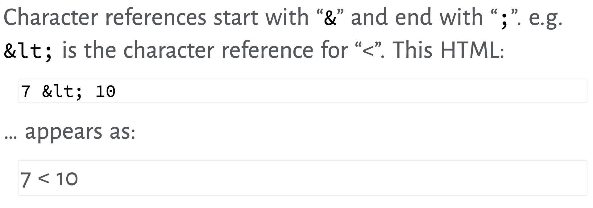 --- # Character References 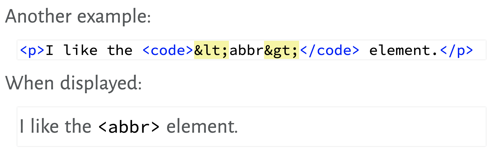 --- # Character References <p>These are the characters that have special job in HTML, and it's worth remembering their references:</p> 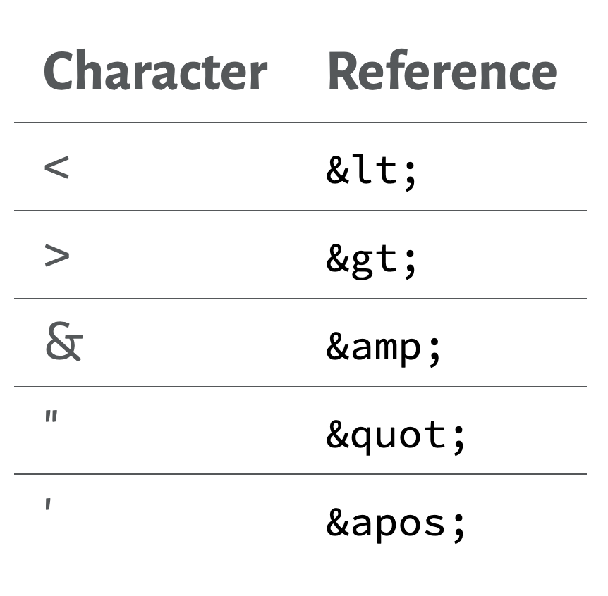 --- # Character References <p>There are also references for characters you just don't have on your keyboard.</p> <p>See the <a href="https://dev.w3.org/html5/html-author/charref">Character Reference Chart</a>.</p> --- # Character References 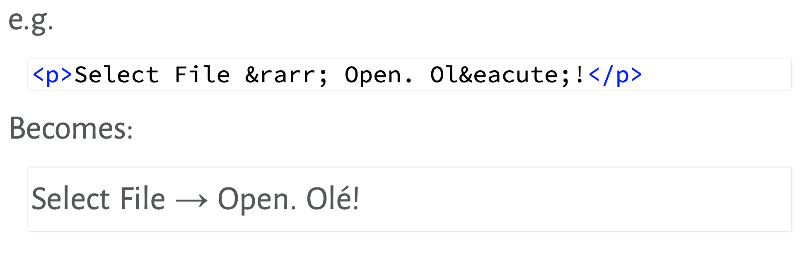 --- # Character References <p>There are even more characters than these named references exist for. For those, you can use <dfn style="color: skyblue">numeric character references</dfn>.</p> --- # Character References <p>Numeric references can refer to any character from the Unicode character set. See the <a href="https://unicode-table.com/en/">Unicode Character Table</a>.</p> <aside class="links"><a href="https://en.wikipedia.org/wiki/Unicode">Wikipedia: Unicode</a></aside> <p><dfn style="color: skyblue">Unicode</dfn> is designed to represent all written languages: about 140k characters. This includes math symbols, emoji, etc.</p> --- # Character References <p>Named references look like <q><code class="remark-code html">&name;</code></q>.</p> <p>Numeric references look like <q><code class="remark-code html">&<mark>#</mark>1234;</code></q>.</p> <p>If you need a numeric reference, have a look at a <a href="https://unicode-table.com/en/">Unicode Character Table</a> or <a href="https://www.fileformat.info/info/unicode/char/search.htm">Unicode Character Search</a>.</p> --- # Character References <p>For example, this uses the <a href="https://unicode-table.com/en/0E3F/">Thai baht symbol</a>, which doesn't have a named reference:</p> 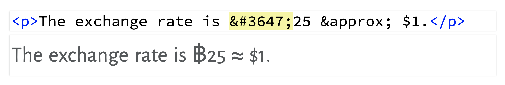 --- # Character References <p>Assuming your browser displays like mine, the baht symbol is in a different font because the font used in these slides doesn't contain that character.</p> <blockquote> <p>The exchange rate is ฿25 ≈ $1.</p></blockquote> <p>This can be a problem with fonts on the web: do your users have the same fonts that support the same characters as you?</p> --- # Character References <aside class="links"><a href="https://emojipedia.org/">Emojipedia</a></aside> <p>Emoji are also Unicode characters. You can copy-and-paste them, or use character references:</p> 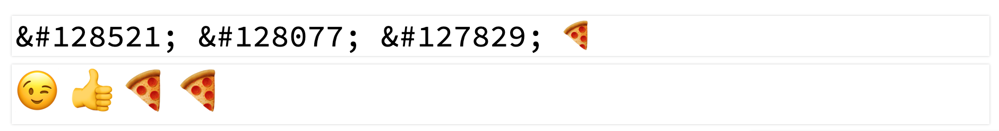 <aside class="links"><a href="https://www.fileformat.info/info/unicode/char/1f609/index.htm">Winking Face emoji</a>, <a href="https://www.fileformat.info/info/unicode/char/1f44d/index.htm">Thumbs Up emoji</a>, <a href="https://www.fileformat.info/info/unicode/char/1f355/index.htm">Slice of Pizza emoji</a></aside> --- # Character References <aside class="links"><a href="https://en.wikipedia.org/wiki/Orthographic_ligature">Wikipedia: ligature</a></aside> <p>Some character combinations (in some fonts) have more beautiful combinations: <dfn style="color: skyblue">ligatures</dfn>.</p> 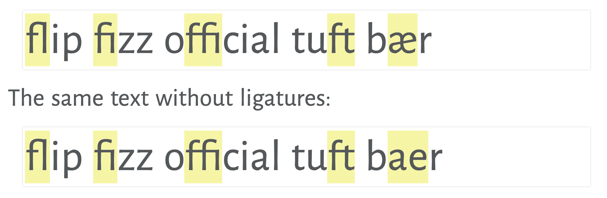 --- # Character References <p>Ligatures are generally used automatically by the browser. They are also applied to emoji to create combination that can represent a huge variety of <q>characters</q>.</p> --- # Character References <p>Combining emoji doesn't seem to work everywhere. Here is a separate <a href=" /165-slides/code/emoji.html">page of the emoji examples</a>.</p> <p>Screenshots: <a href=" /165-slides/media/emoji-linux-firefox.png">Firefox on Linux</a>, <a href=" /165-slides/media/emoji-android-chrome.png">Chrome on Android</a>, <a href=" /165-slides/media/emoji-windows-firefox.png">Firefox on Windows 10</a>, <a href=" /165-slides/media/emoji-windows-chrome.png">Chrome on Windows 10</a>, <a href=" /165-slides/media/emoji-windows-edge.png">Edge on Windows 10</a>.</p> --- # Q & A